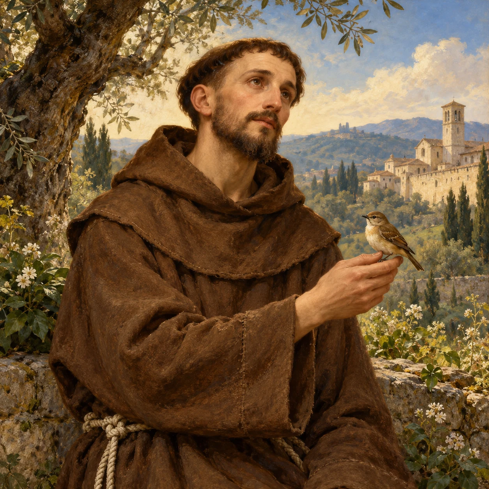
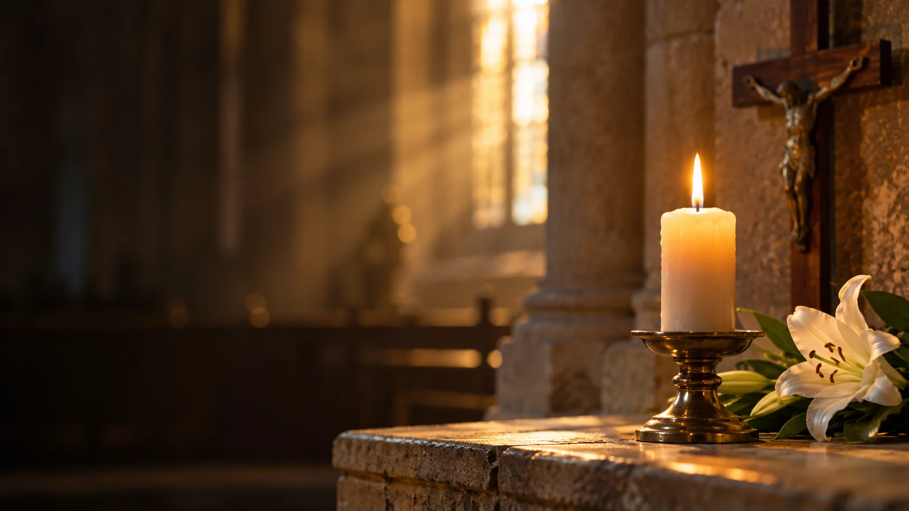

Modlitwa dnia
Panie, daj mi dziś serce uważne na Ciebie i ludzi, których stawiasz na mojej drodze.
Zatrzymaj się na modlitwę →Panie, daj mi dziś serce uważne na Ciebie i ludzi, których stawiasz na mojej drodze.
Zatrzymaj się na modlitwę →
Otwórz się na Słowo. Znajdź chwilę ciszy i pozwól, by prowadziło Cię przez dzień.
Przejdź do czytań →Z Maryją rozważaj życie Jezusa. Krok po kroku, w swoim rytmie.
Odmów różaniec →
Odkryj radość prostoty, pokoju i troski o stworzenie.
Poznaj świętego →Powierz swoje intencje. Zatrzymajmy się przy sobie w modlitwie.
O pokój w rodzinie i zgodę w sercach.
O zdrowie i siłę dla osoby bliskiej.
O światło Ducha Świętego w decyzjach.
Inspiracje do osobistej modlitwy
Powierzmy ich Bożemu miłosierdziu. Zachowaj chwilę pamięci.
Codzienna modlitwa
Nie potrzebujesz idealnych warunków. Zacznij od małej, świadomej chwili.
Przewodnik
Jak korzystać z prowadzenia, kiedy dopiero zaczynasz albo wracasz po przerwie.

Pamięć o bliskich
Modlitwa, dobre wspomnienie i drobny gest mogą pomóc zachować więź pamięci.